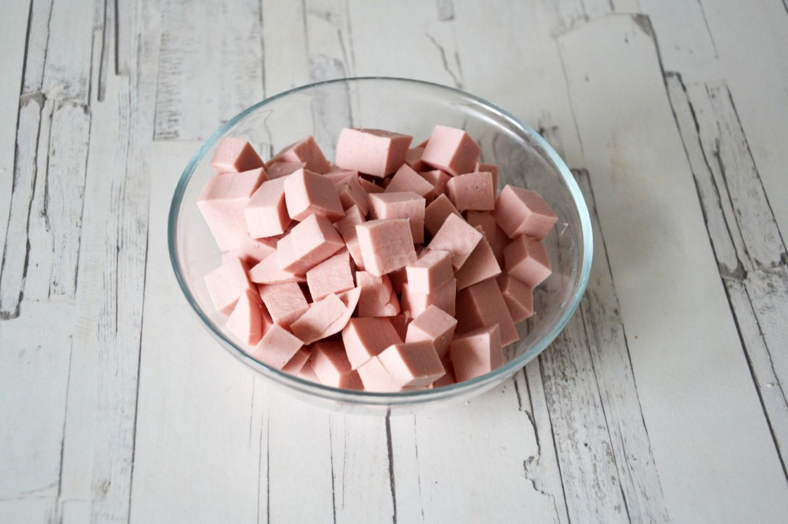

Шаг 1:
Как сделать оливье с колбасой? Подготовьте необходимые ингредиенты.
Картофель и морковь отварите заранее и остудите. Куриные яйца отварите
вкрутую, также охладите их и очистите от скорлупы. Вареную колбасу можете
взять любую, на свой вкус. Огурцы могут быть соленые или маринованные, это
не критично.
Шаг 2:
Из банки зеленого горошка слейте жидкость, а сам горошек откиньте
на дуршлаг и дайте полежать какое-то время. Это хорошо делать, чтобы
салат не "поплыл" - мы даем всем излишкам влаги высохнуть.
Шаг 3:

Вареную колбасу нарежьте кубиками. Я взяла молочную колбаску.
Шаг 4:
Вареную и охлажденную морковь очистите от кожицы и нарежьте средними
кубиками. Старайтесь все ингредиенты нарезать кубиками одинаковых
размеров, чтобы салат выглядел красиво и опрятно.
Шаг 5:

Вареный картофель также очистите от кожуры и нарежьте средними
кубиками. Нарежьте вареные и очищенные яйца.
Шаг 6:
Огурцы нарежьте кубиками. Можете очистить их от шкурки, особенно
если она жестковата. Я этого не делала. Проследите, чтобы огурцы у
вас не были слишком солеными.
Шаг 7:
В подходящем салатнике соедините все нарезанные продукты с горошком.
Шаг 8:
Заправьте салат оливье майонезом. Лучше используйте домашний, сделанный своими руками.
Шаг 9:
Салат перемешайте и попробуйте на соль. Если нужно, досолите. Уберите
оливье на часок в холодильник - он вкуснее в охлажденном виде. Потом можете
подавать к столу. Приятного аппетита!
Майонез лучше приготовить самостоятельно. Будет вкуснее и полезнее. Смотрите здесь
интересные рецепты домашнего майонеза.Также в качестве заправки можно использовать
не только майонез, но и сметану или натуральный йогурт. Их можно взять по отдельности
либо смешать с майонезом в любой пропорции на свой вкус - это снизит калорийность блюда.